Scale
Scale
ratio of a distance on the map to the corresponding distance on the ground
Scale
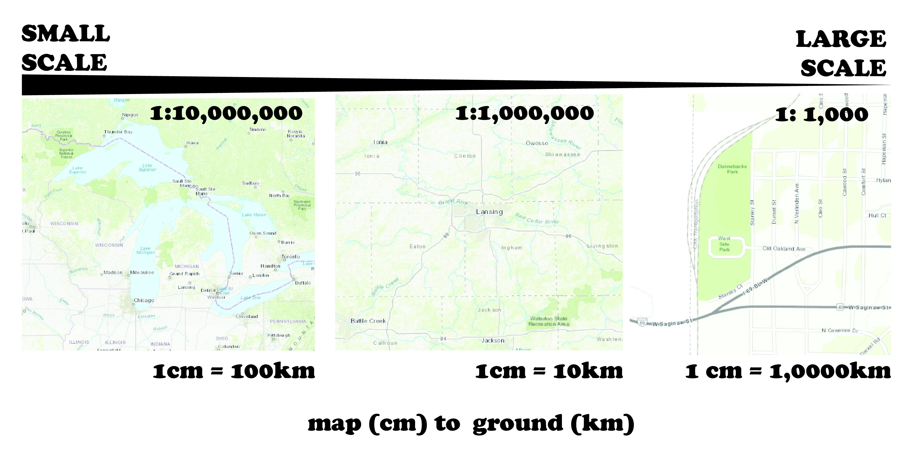
Absolute vs. Relative
- Absolute scale is measurable (map scale)
- Relative scale is intangible construction (large scale event)
Representative Fraction
A representative fraction relates map distance to ground distance. It is represented typically as a ratio (1:1000)
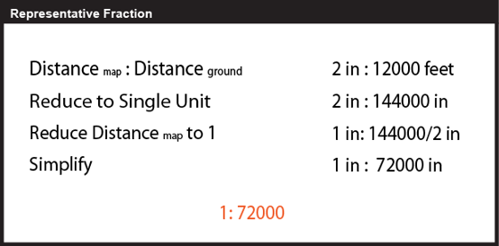Why is scale important?
- Phenomenon Measurement
- Map Generalization
- Map Reading
Scale encompasses a number of things
- Scale of the phenomena
- Scale of its detection through observation
- Scale at which a pattern is statistically analyzed and communicated
Measurement
Some processes/phenomena only exist at certain scales.
any inferences about scale-dependency in a system are constrained by the extent and grain of investigation
Modifiable Areal Unit Problem (MAUP)
MAUP is caused both by changing the size of aggregation units and by changing their boundaries.
You should consider the impact of your generalization choices.

Generalization
control of the amount of detailed information portrayed in a map
Cartographic Generalization
generalization to prepare objects for symbolization
Generalization Operators
- Simplification
- Aggregation
- Smoothing
- Selection/Elimination
- Typification
- Displacement
- Exaggeration
- Collapse
- Merge
Simplification
removal of vertices from a feature
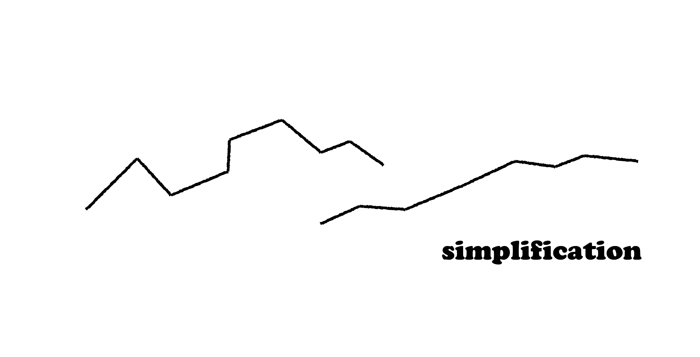Aggregation
transforming a group of points into an area
Amalgamation is this process for areas to a larger area
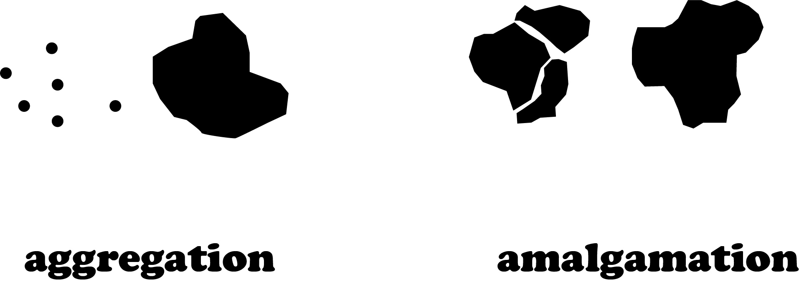Smoothing
reduction of sharp angles (often through increasing number of vertices)
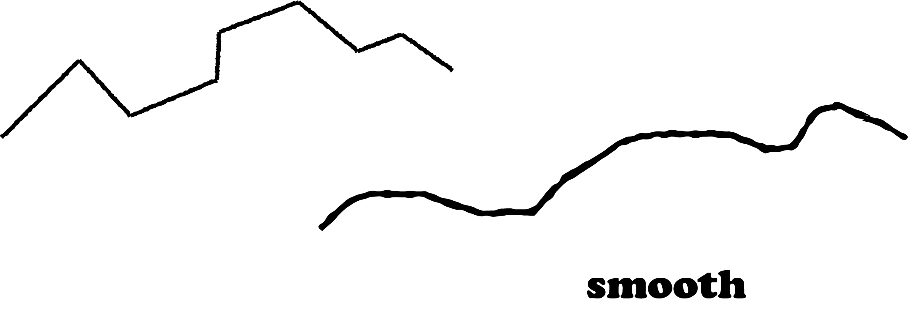Selection/Elimmination
choosing which objects to include or exclude from a map
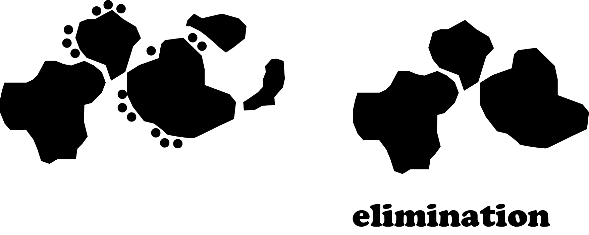Typification
set of similar features is replaced with a smaller set of those features
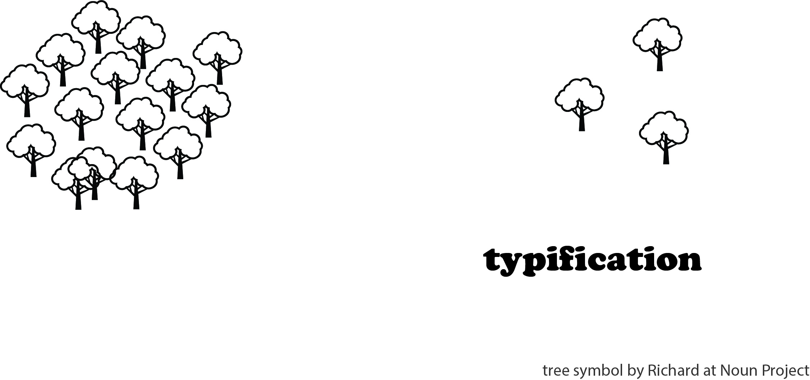Displacement
move an object away from another one to improve seperability
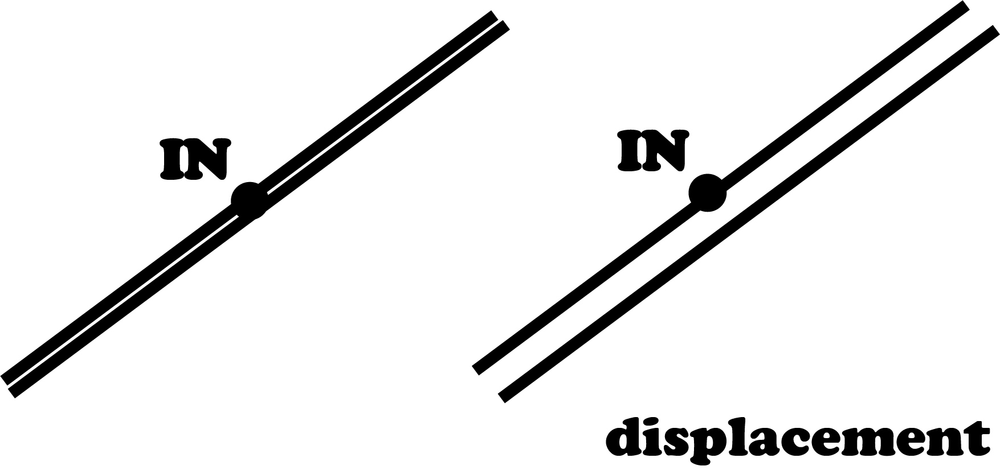Exaggeration
overemphasis on a features representation
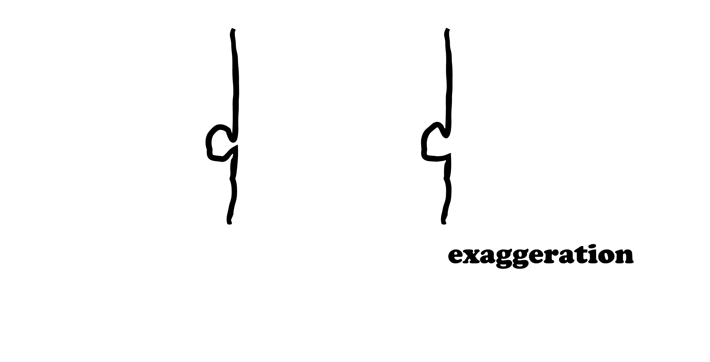Collapse
Reduce a higher dimension feature to a point
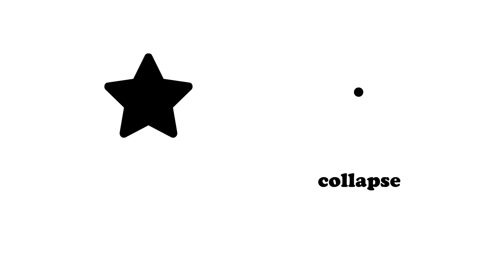Merge
group a collection of line features and reduce their complexity
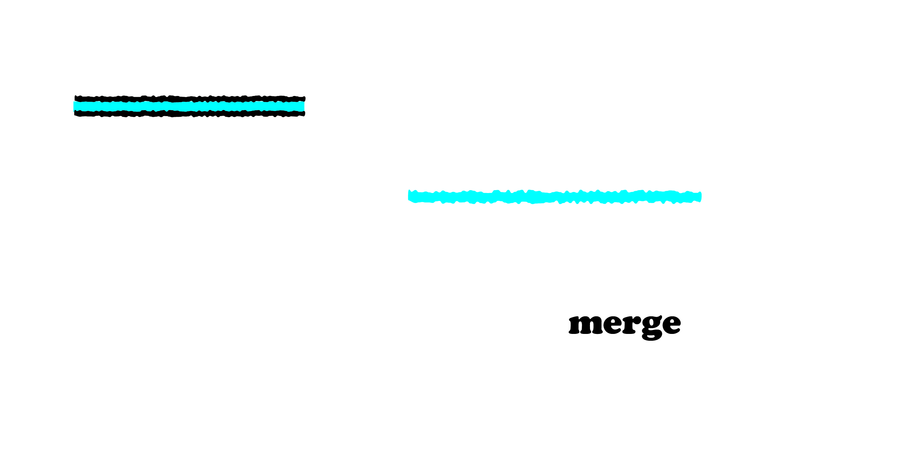